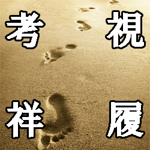
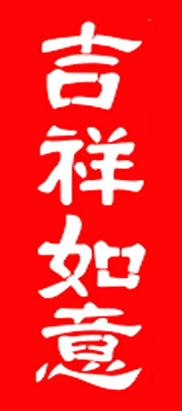
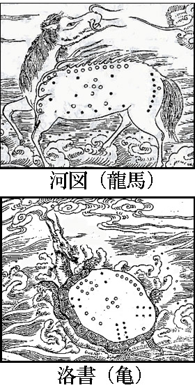
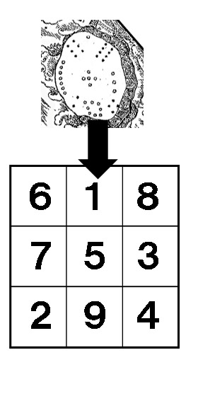
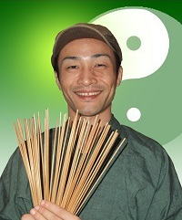

| 座右の銘になる 易経の言葉 わかりやすい中国古典 | |
| 亀丸 | |
| Kamemaru dou (2016) | |
今の時代のあなたに届く、易の言葉を
亀丸です。
私は「易」という占いをメインにしてやっている占い師です。
易というのは、あのおみくじみたいな棒をじゃらじゃらやってる占いなのですが、若い人にはあまりなじみがないので、これはどういう占いなんですかとよく訊ねられます。
私は「中国版タロットカード占いみたいなものです」と説明しています。
タロットカードが78枚のカードのなかから何が出るかなで占うものだとすると、易占いは64種類の卦のなかから何が出るかなで占うものです。
この64種類の卦はすべて意味が異なります。
それぞれに深い意味が含まれています。
私たち占い師は、筮竹や賽子を使って、そのとき偶然に出てきた卦に、必然的な意味を感じます。そこから吉凶の具合を判断したり、運命の神様からのメッセージを感じたりするのが易占いという方法です。
では、その64種類の卦は誰がいつ決めたものなのでしょうか。
誰かはわかりませんが、いつかは３０００年ほど前の時代だろうと考えられています。
その頃、「周」という王朝が中国にはありました。その時代に書かれた『易経』という書物に64種類の卦について書かれています。
易占いをする人はその易経に書かれている言葉をベースに、イメージを膨らませて、さまざまなご相談に対してもっとも適した答を見つけ出そうとしているのです。
易経はけして長くない書物です。
ネットを検索すれば全文を容易にみつけることが可能です。
その易経の文章が３０００年もの間、中国の人たちに愛され、海を渡って日本にも伝わり、多くの人に親しまれてきたのです。
本文中に書いていますが、私たちは知らないうちに日常生活で多くの「易経の言葉」を使っています。
たとえば、観光旅行などで使われる「観光」という言葉は易経の言葉です。
よくよく考えてみたら「光を観る」ってふしぎな言い回しですよね。
フランス革命やロシア革命などの「革命」や図書館などの「図書」いうのも易経の言葉です。
「観光」「革命」「図書」については、それぞれの章で語源となった易経の言葉を紹介しています。
企業名でいえば、「資生堂」や「旭化成」、「楽天」といった有名な会社の名前も易経から引用されたものです。
ホームページにも書かれていますが、資生堂は「万物資生」という言葉からつけられました。
易経は、旧約聖書のように、最初に「天」と「地」の卦から始まるのですが、その「地」のところに書いてある言葉です。万物（ありとあらゆるもの）は大地を資（もと）に生まれるという意味です。いろんな商品を生み出していきたい、という創業者の心意気がそこから感じ取れます。
旭化成と楽天については本書の「天文を観てもって時変を察し、人文を観てもって天下を化成す」の章と「楽天知命」の章をお読みください。
この本はそんな『易経』のなかに書かれている言葉についてのお話です。
易経には素敵な言葉がたくさんあります。
まずこの本のコンセプトとして心がけたことは「今の時代を生きるあなたの心に届くような解説」を書くことです。
易経の解説本は書店にいけば山ほど並んでいます。
しかし、くだらないジジイが書いた本は「謙虚にせよ」「目上の人に従え」「貞正にしておれば吉」といった、空虚なお説教のような解説がなされています。これではあまりに心に入ってこない。
そんなことを言われたって、きっと今を生きているあなたには何も響くものがないでしょう。
だから、この本は私自身が易経の言葉を考えて、自分の言葉にしっかり落とし込んだものをお届けします。
その分、従来の解説とは違っているところもあるでしょう。
けれども、易の精神、易の本質みたいなものからは外れていないつもりでいます。
この本で書いた解説の大半は、実際の鑑定で相談者さんにお話ししたことです。
それぞれに置かれている状況は異なるのですが、そのお話をするにふさわしいときに、ふしぎと筮竹が導いてその卦を出してくれるのです。
その人の人生のひとつのタイミングで易経の言葉を伝えることができたことは、占い師である私にとってすごく嬉しい瞬間なのです。
それと同時に、この本を書くにあたって心がけたことは「スピリチュアル過ぎることは書かない」ということです。
占い師が書く本ですから、多少飛んだことも書いていると思いますが、スピリチュアル過ぎることは書いていないつもりです。
キンドルを購入される方は知識レベルの高い方が多いと思われるので、そういう方が読んでも、ちゃんと納得できる、易や易経のことを教養としてしっかり学ぶことができるものを書いてみました。
世のなかに出ている易経の解説書はいろんなものがあって、なかにはスピリチュアル過ぎたり、あまりに我田引水になっているものも少なくありません。
もちろん人それぞれ、解釈は自由です。自由な解釈がたくさんあるほうが世のなかは面白いのですが、この本は易の精神、易の本質のところはしっかり守っていこうと思って書いています。
実のところ、易経はあまりに古すぎて、何が書かれているのか意味不明な個所も少なくありません。
でも、その言葉と言葉の隙間から、栄枯盛衰の理、人間の本質みたいなものが薄らと感じ取れます。その薄らと感じ取れる「何か」に惹かれて、多くの人が易経にのめり込んできました。
私もその一人です。
そして、きっとあなたも易経の言葉から「何か」を感じ取れるはずです。
では、そろそろ本文に入りましょうか。
今この瞬間に易経の言葉をあなたにお話しできることは、すごく嬉しいことです。
易経の言葉から、あなたが人生を生きていくときの支えとなる「言葉」が一つでも、二つでも見つかりますように。
亀丸
※本書は縦組みでレイアウトされています。
キンドルペーパーホワイト、スマホで確認はしていますが、ご覧になる機種により、表示の差異がありますので、ご了承ください。
誰かに認められなくたって 、冷たい水を出し続ける
誰かに認められなくたって 、冷たい水を出し続ける
「寒泉」という言葉は、私が易経のなかで一番好きな言葉です。
「水風井」という卦のなかに書かれている言葉です。
「寒い」というのは「冷たい」の意味だと思ってください。
どんなときも「冷たい（水を出す）泉」であり続けよう、という意味です。
仕事に対する姿勢の言葉です。
すべての仕事にあてはまる言葉ですが、とりわけ客商売をしている人には深く入ってくる言葉だと思います。
易経64卦のなかに「水風井」という卦があります。
水と風は八卦ですので、これはそのまま井戸の「井」という意味の卦です。
64種類しかない卦のなかに、なぜか井戸なんてのが組み込まれているのが易占いの面白さです。
水風井は井戸のお話です。
あるところに村がありました。
でも戦争か何かで荒廃し、村人は皆いなくなり、井戸だけが取り残されました。
周囲の家は朽ちてゆき、荒野に残された井戸は利用されなくなりました。
それでも井戸は冷水を出し続けます。
井戸が毎日湧かしている水は誰も飲むことがなく、無駄になっていきます。それでも井戸は冷たい水を出し続けなければいけないのです。
というのも、一度腐ってしまった井戸を元に戻すのは大変です。
誰かにもう一度美味しい（冷たい）水を飲ませるためには、たとえ無駄になろうとも毎日、冷水を出す努力を続けるしかないのです。
そうやって、日々冷たい水を出し続けていると、ある日どこかの旅人がその井戸に立ち寄る日がやってくるでしょう。
その井戸の水の冷たさ、美味しさに感激し、井戸のことをおぼえてくれるかもしれません。
旅人仲間に「あそこにはいい井戸がある」と伝えてくれることもあるでしょう。
次第に多くの人に井戸のことは知られるようになるでしょう。
いつの日か、新しい村をつくりたいと考えている人の耳にその噂が届いたとき、井戸のところにやってくるかもしれません。そして、井戸の周りには再び村ができるでしょう。
水場のないところに人は住めません。
現代のようにどこにいっても上下水道が整備されているわけではありません。水道のない時代、人々は良い水場を求めて移動を続けていました。
良い水場だからといって必ずしも周囲に人が住むとは限りませんが、良い水場でないと周囲に人が住むことはけしてないのです。
だから、人が来ようが来まいが、どんなときも「寒泉」でい続けよう。
そうすればいつか周囲に人が集まってくる──というお話です。
同じ中国の言葉でいうなら、「桃李はものを言わざるけれど、その下に自ら蹊（道）を成す」なども似た意味の言葉です。
俳優の松坂桃李さんや成蹊大学の名前の由来の言葉ですね。
桃や李（すもも）の木は美味しい果実を毎年作り続けていれば、黙っていてもいつか人々が集まってくるということ。
多くの人が桃や李の木に向かって歩いていくので、自然と道ができるということです。
良いものをつくっていれば、自然と評価は後からついてくる。
他人の評価は後回しに考えておいて、自分が良いと思うことをし続ける努力が大切、と古人は説いたわけです。
占いでよくこういうことを訊ねられます。
「私は職場の人たちにどんな風に思われているのですか？」
このタイプのご質問は、心配性の女性の方からのことが多いのですが、男性の方でも同様の質問をされる方が少なくありません。
職場と一口にいっても、そこにいる人それぞれで考え方や評価は異なるはずなので、それをまとめて占っても意味のない質問だろうと個人的には思うのですが、占い師って仕事はそういうところで反論してもしょうがない。なんとなくでいつも占ってみてます。
こういう質問をされる方というのは、とにかく他者からの評価が気になって気になってしょうがないのでしょう。
周囲にいる人全体が漠然と集合体になっていて、その集合体に自分が振り回されているような不安があるのでしょう。
カウンセリング用語で「他者中心」ということもあります。
いわゆる「ジコチュー（自己中）」の反対で、他人のことばかり気になる人のことです。ジコチューも問題ですが、他者チューも他の人のことを本当に考えているわけではなく、自分のあり方を省りみず、心のなかで他人のせいばかりにしているので問題なのです。
確かに仕事や商売というのは、他人に評価されてなんぼなところがあります。
自分一人だけが良いと思って仕事をしていても、一人よがりでは意味がありません。職場の人やお客さんたちに評価されてはじめて意味が出てきます。
しかし、「他者目線」だけで仕事をしていると必ず苦しくなります。
「上司が──」「お客さんが──」「同僚が──」という視点だけで仕事をすると振り回されます。
みんな言うことがバラバラ。他人なんてのはいい加減なもんで、先々のリスクを考えず、その場の思いつきで発言しています。職場の上司や同僚はみんな自分のことで精一杯で、あなたの頑張りをあなたが思っているほどは見てくれていません。
他人に合わせようとしていると、次第に仕事の質が雑になっていきます。
だんだんと自分で考えることをやめてしまい、本来のあるべき仕事の姿から離れていってしまいます。
だから「自分で自分を認めてあげる」必要があるんだと思うんです。
仕事は時々「自分目線」が大切なんです。
自分は今、本当に良い仕事ができているのか？──
自分で自分に問うてみて、自分自身で評価をしてあげればいい。
もし自分が「良い仕事」ができてないと思えば、それを自ら改める。
「良い仕事」をしていると認めてあげられるのならば、他者がどう思おうとそれでいいのです。
良い仕事ができていれば結果（他人からの評価）はきっと後から付いてきますから。
自分は今、冷たい水をちゃんと出せているのか？──
仕事を占ったときに「水風井（寒泉）」が出た場合、今すぐ周囲やお客さんからの評価を欲しがるのではなくて、そういう「自分目線」に立ち返ってみることを示唆しているんだなと、私は解釈しています。
苦しかった過去に意味を持たせすぎてはいけない
苦しかった過去に意味を持たせすぎてはいけない
易経には、現代人の感覚で読んでも古びない鋭さを持った言葉が含まれています。
水沢節の卦に「苦節不可貞」と書かれています。
これは「苦節を貞にすべからず」とよみます。
「苦節」は現代の日本語でも使われる言葉です。
たとえば、長い間売れなかった演歌歌手や芸人がようやく売れ出したとき、「苦節10年、ようやく日の目をみることができました」などというふうに使います。
「苦節」は苦しかった期間という意味です。
「貞にすべからず」の「貞」はここでは「良いこと、正しいこと」ぐらいで訳しましょう。
「苦節を貞にすべからず」は、「苦しかった期間を良いことや正しいことだったと考えてはいけない」ということになります。
苦しかった時代があったからこそ今の私がいる──
人間はそのように考えます。
過去の苦しさを、それは何の意味も無い苦しさだったと考えることは、とても辛い。
苦しさにはなんらかの必要な意味があった、なんらかの成長につながっていた、などと考えるから私たちは生きていけるのです。
でも、易経はそんな甘い考えをドンと突き放します。
「苦節を貞にすべからず」
苦しかった期間を、良いことや正しいことだったと考えてはいけないというのです。
なぜそんなことを言うのでしょうか。
「人生に無駄なことはないからね」「涙の数だけ強くなれるよ」と言ったほうがやさしい感じがするのに、なぜ突き放すようなことを言うのでしょうか？
世間で上の立場に立った人のなかには、自分の過去の苦労話を自慢げに語る人が少なくありません。
おそらく易経はそういう人を念頭に置いています。
苦労自慢はみっともない、ということだけではありません。
自分の苦労をとりたてて主張する人は、たいがい他人にも苦労することを要求していきます。
「俺も苦労してきた。だから、お前も苦労するべきだ」
苦しいことをさせるのはお前のためだぐらいの勢いで他人に負荷を与えてきます。
ブラック企業や極端な体育会系の構造は「苦節を貞にする」ところから始まっているように思います。
少し話を変えてみます。
占いにあまり興味がない人に向けて、次のクイズを出すと、皆さん、「へえー」と驚かれます。
「占いのご相談のなかで、いちばん多い相談は何だと思いますか？」
こう訊ねると、まず「え、恋愛の相談が多いんじゃないんですか？」と返ってくるのですが、もちろんその通りです。恋愛に関するご相談が圧倒的に多く、９割ぐらいが恋愛のご相談です。
続けて、「その恋愛のご相談のなかで、どういう状況のご相談がいちばん多いと思いますか？」と訊ねてみます。
占い業界にいる人には当たり前の答なのですが、一般の人でこれに即答で答えられた人はいままでいません。
あなたはわかりますか？
答は「復縁」のご相談です。
何か月か前、長い人では何年か前に別れた彼と復縁したい、彼と復縁できますか、というご相談内容がとても多いのです。
そういうと、たいてい「でも、復縁って難しいでしょう。むこうが別れたのは別れただけの理由があったんでしょうから」みたいな反応が返ってきます。
そうです。
だから、皆さんに相談しないで、占い師を頼ってきていただけるのです。
鑑定をしていると、明らかにもはやうまくいっていない恋愛にいつまでも執着している人がいらっしゃいます。
本人の気持ち次第なのでなんとも言いづらいのですが、こんだけ長い間苦しんだんだからこの恋愛で報われないと意味がない、と意地になっているだけにみえる人がいます。
話をよくよく聞いてみると、その彼のことを好きになったきっかけは「私が以前、苦しい時に助けてくれたから」などということが多い。
過去の苦しさに意味を持たせて、その意味をつなぎ続けようとすることが「執着」を生み、いつまでも幸せな方向に舵を切れない、逆に苦しさを増大させていくことがあります。
占い師に求められているのは、苦しさの「意味」づけなのでしょう。
新しい「意味」がみつかれば、その彼に執着しなくても、前に向かって進んでいけるのでしょう。
その意味探しの作業が大変だなといつも思います。
でも、こういう心のメカニズムは復縁に限った話だけではないでしょう。
私たちは自分に降りかかった、過去の苦しい出来事に意味を持たせようとします。
「あの出来事があったから自分は成長できた......」などと考えて、苦しさを乗り越えようとします。苦しさは一度だけやってくるものではありません。何度も後悔というかたちで復活してきます。その都度、意味づけをおこないます。
「この事故を教訓にして......」なんて言葉もよく耳にします。近ごろ、世のなかに規制がどんどん増えていくのはそういう苦しさの意味づけ行為から派生しているのかもしれません。
もちろん、その苦労や挫折のおかげで大きくプラスになることも世のなかには少なくないでしょう。
失敗から学ぶことは大切です。
でも、苦しい記憶に意味を持たせることによって、逆に未来の可能性を狭めてしまっていることもあるはずです。苦しみに意味を持たせることは必ずしも正しいことではないのです。
だから私たちは、苦しいことなんぞは単に苦しいだけに過ぎないと割り切る「勇気」が、時々必要なんだと思うのです。
苦しいことは苦しいこと。
それ以上でもそれ以下でもない。
そして過去を置いておいて、頭をフラットにして、これからの未来においていちばん幸せな方向は何かを考えればいいのです。
もちろんそれはけして簡単ではありません。もしかしたら精神的負荷の重いことなのかもしれません。
でも、言葉としておぼえておいてください。必要な場面がきっとあります。
「苦節を貞にすべからず」という言葉を。
易経は続けてこう書いています。
「甘節。吉」
甘ったるい（楽な）人生で、何が悪いのさ。
楽で、幸せな道はいくらでもあるのです。
その楽で、幸せな道を歩いていくことを批判する人がいます。他人ばかりでなく、苦節を大事にする自分自身も心のなかで批判してきます。でも、楽で、幸せな道を堂々と歩いていきましょう。「甘説。吉」というシンプルな文言に迷いのない力強さがあります。
「苦節を貞にすべからず」
そういうことをさらっと言い切るところに易経の古びない鋭さを感じます。
過去に起こった幸せについて考えてみる
過去に起こった幸せについて考えてみる
天沢履という卦のなかに「視履考祥」という言葉があります。
なぜかあまり有名な言葉ではないのですが、私はとても良い言葉だと思っています。
「履」という字は、「（靴や靴下を）はく」という読み方が一般的ですが、易学では「ふむ（踏む）」と読みます。
足で地面を履むことから「足跡」という意味になり、さらに転じて「これまで歩んできた道（人生）」という意味も含むようになりました。
通常の日本語でも、たとえば「履歴書」などの言葉で、「履＝これまで歩んできた道」という意味は残されていますよね。

「祥」という字は、日本語では人名の「祥子」さんや東京の地名の「吉祥寺」などで知られる字です。
「幸運」という意味で考えていいでしょう。
「ネ（しめすへん）」は「神様」や「神事」に関することをあらわす偏で、つくりの「羊」は「美」「善」「義」など良いことや美しいことをあらわすものなので、かなり良い意味合いの強い漢字です。
なので中国の人たちにとってはとても使いたい漢字で、よく街角の縁起物に「吉祥如意」なんて書かれています。「私の意（願い）のままの吉祥（幸運）を！」ということでしょう。

「視履考祥」は「履を視て、祥を考える」と読みます。
あなたがこれまで歩んできた道をもう一度見直して、自分に起こった幸運について考えなさい──
という意味になります。
「これまでの人生に起きてきた幸運をちゃんと感じて、それに感謝しなさい」と解釈できるでしょう。
人間は「不運」なことに気づきやすく、「幸運」なことに気づきにくいものです。
たとえば、こんなたとえを出してみましょう。
あなたがすごく行きたいと思っていた会社の就職面接に出かけるとします。
ところが、その途中でたまたま交通事故にあってしまい、面接にたどりつくことができませんでした。
あなたは自分の不運に気づきます。
あのとき、もう５分早く出かけておけば、あの事故にあわずに済んだのにと後悔することもあるでしょう。
その一方で、あなたが事故にあったおかげで、かわりにその会社の試験に合格して採用された人がいるのです。
その人は自分の幸運に気づいていないでしょう。
自分の実力で合格したと思い込んでいるはずです。
当たり前だと思っている私たちの暮らしは、実はものすごい幸運によって得られているものかもしれませんよね。
あなたは今日、どんな一日でしたか。
何事もない一日でしたか。
もしかしたら、あなたが今日たまたま５分早く仕事に出かけたので、大事故にあわずに済んでいたというスーパー幸運があったのかもしれませんよね。でも、そんな幸運に気づいていないまま私たちは日々を過ごしているわけです。
宝くじが当たるとか、万馬券が当たるとか、そういう目に見えるスーパーラッキーだけが幸運ではありません。
何事もない日常はきっと多くの幸運によって構成されているのです。
また幸運と不運は背中あわせになりながら、いろんな人をつなげています。
あなたにとって不運な出来事はもしかしたら誰かにとっての幸運なのかもしれないし、あなたが当たり前だと思っていることはどこかの誰かの不運とつながっているのかもしれません。
だから自分に起こってくれた「幸運」には、ちゃんと気づいて感謝しなければいけないんだと思うのです。
幸運に気づくためには、研ぎ澄まされた、鋭敏な感性が必要なのでしょう。日々の鍛錬が必要なものだと思うのです。
幸運に多く恵まれる人、不運なことが起こりがちな人──その差はあると思います。
けっして平等ではないでしょう。
けれど、「私の人生はずっと不運続きなんです......」なんて言う人がときどき鑑定にやってくるのですが、絶対にそんなことはありません。不運なことは確かに多かったかもしれませんが、必ず幸運も起こっていたはずです。
今後の人生で、幸運の量を増やしたいならどうしたらいいでしょうか？
まずやるべきことは「履を視て、祥を考える」ことだろうと思います。
そこに感謝なくして、神様から与えられる幸運の量が増えることはどう考えてもないですよね。
「履を視て、祥を考える」という言葉の別の解釈も少し考えてみましょう。
こんな風にも解釈できるかもしれません。
これまでの人生に起こった「幸運」について考えることが、あなたのヒントになる──
人生には、何をしていいのか、どこに向かって進んだらいいのか、本当に先が見えなくなってしまうことがあります。
そういう悩みに陥ったことのない、恵まれた人もいるでしょう。でも、自分が頑張ってきた仕事を失い、次にどうしていいのか本当にわからないという人は世のなかにけして少なくありません。
方向がまるで見えないとき、「視履考祥」という言葉がひとつのヒントになるかもしれません。
「そういえば、あれをやっていたときはなぜか人にめぐまれ、なにかと助けが入って、幸運なことが多かったような気がする......」
そんなことがあなたの過去の人生にきっと何度かあったはずです。
仕事じゃなくても、部活動でも、趣味でも、かまいません。
幸運がやってきたことはきっと何かしらの意味があったことです。自分に幸運がやってきていたときのパターンを思い出してみてください。
あなたが幸運に恵まれたその出来事に、きっと本当のあなたがやるべき何かが含まれているのだろうと、私は信じています。
国の光を観る
国の光を観る
易経の言葉のなかで有名なものも取り上げてみます。
「観光旅行」、「世界遺産を観光する」という風に広く使われている「観光」という言葉はもとは易経の言葉です。
「観光」という言葉は、よくよく考えてみればふしぎな言い回しの言葉です。
光を観るとはいったい何を観るということなんでしょうか？
易経の風地観という卦は「観る」ことについて書かれた卦です。
この卦のなかに「観国之光」と書かれています。
「国の光を観る」と素直に読みます。
「国」としか書かれていないので、国内と考えてもいいのですが、外国のことをあらわしていると解釈されることが多いです。
易経の解釈が進んだ時代は、中国はいくつかの国に分かれて、争いを続けていた時代でした。
あれだけ大きな国ですから、今だってそうですが、当時は別の地域に行けば外国のように、文化や風習が異なっていたことでしょう。
「観国之光」は「さまざまな国に行き、その国の光（良いところ）を観て学んできなさい」ということです。
自分の国も良いところはありますが、すべての国にそれぞれの良さがある。先進国といわれるような国が全部において途上国に勝っているわけではなく、どこの国の文化にも人間がうまくやっていくために考え出された優れたアイディアがあります。
観光旅行というのは、その国の良いところを観て学んでくる旅行ということなんですよね。
今の時代に「観光」というと、ツアーバスに乗って名所名跡をまわるような旅行のイメージです。
旅慣れていないオジサン、オバサンがやっているような、どことなくヌルい旅行のように感じます。
私は若い頃バックパッカーで、観光地をあえて避けるような旅を好んでいました。周囲にもそんな人が集まっていたので、「観光」という言葉を使うときはどこか馬鹿にするようなニュアンスを含んで使っていました。
易を学んでから「観光」という言葉のイメージが大きく変わりました。
「観光とは光を観るということなんだな」
観光という言葉をいい意味で使うようになりました。
でも、旅行スタイル自体は変わっていません。
その国の光とは、ユネスコ認定世界遺産のような名所名跡だけでないと思います。町なかの人々の暮らしのなかに、猥雑なもののなかにこそ、「光」があると思っています。
光をちゃんと観ることのできる、真の意味での「観光客」になりたいと今は思っています。
命を知り、天を楽しむ。ゆえに憂えず
命を知り、天を楽しむ。ゆえに憂えず
「ま、なるようになるさ」って、ポジティブに物事を考える人のことを「楽天的」とか、「楽天家」とか、言うことがありますよね。
この言葉は易経の「楽天知命」という言葉が語源です。
「命を知り、天を楽しむ」とよみます。
とくに解説を付け加えなくても、なんとなくいい言葉だなって伝わってくるものがありますよね。
楽天市場でおなじみの、楽天という企業は、おそらくこの易経の「楽天知命」という言葉と、織田信長の「楽市楽座」の２つのイメージからつけられた名前でしょう。ポジティブで革新的なイメージのする企業名です。
人生がすべて思いのままに運ぶことはありません。
日々、私たちは期待を裏切られたり、予想外な結果にダメージを受けたりしています。人生は何が起こるかわかりません。時には事故や天災に遭うこともあるでしょう。
でも、だからこそ人生は面白いと思って生きていきたいものです。
すべてのことが予定通りにおさまるのだったら、これほどつまらないものはありません。
人生はよく森を歩くことにたとえられます。
獰猛な獣に出くわすのではないか、害虫に刺されるのではないか、道に迷ってしまうんじゃないかと、不安に怯えて歩いていけば、森のなかは恐ろしい世界にみえます。
逆に、木々が美しいな、花が咲いているな、鳥のさえずりが気持ちいいな、これからどんな景色がみられるんだろうと、前向きに歩いていけば、森のなかは楽しい世界にみえてくるでしょう。
どうせ森を歩いていかなければいけないのなら、楽しい世界を歩いていきたいものです。
実際、不安に怯えて歩いている人より、楽しい気持ちで歩いている人のほうが案外と無事で、実りのある結果を得るものです。
「天を楽しむ」とは、どんなことが起こってもそれを楽しめる心の余裕を持って生きていこうということです。
もう少し深く掘り下げて解説してみましょう。
「楽天知命」は、易経の繋辞上伝という部分に書かれている言葉です。
繋辞上伝というのは、易経の本文が書かれたずっと後の時代に、儒学者が補足として書き加えた部分です。易の哲学みたいなのを説いています。
まず易の根本的な哲学として、「天と地の間にある、すべてのものは変化しつづける」というのを理解してください。
易は変化の哲学です。
ありとあらゆるものは一定ではなく、変わり続ける。すべてはあらわれては消えてゆくのです。
これは仏教も「諸行無常（すべてのものは移ろいゆき、同じままでいることはない）」の考え方ですので、アジア哲学の根本といってもいいかもしれません。
易は、その移ろいゆくものをとらえようとする学問です。
天にはなんらかの法則があり、その変化を感じ、見定めようとするのが易学です。
その天の法則に従って、それぞれの人の人生に起こることを「命」とよびます。
一人一人の人間は大きな大きな天の法則のなかの、ほんの一部分だけを担当しています。でも、それぞれの人にとってその「命」はかけがえのない大切なものです。
命のことを、意味合いに応じて、運命といったり、宿命といったりもします。
占いというのは、一言でいえば命を知ろうとすることです。
しかし、人間なんてちっぽけな存在です。
占いをいくら究めたところで、人間の考えが天の意志に及ぶことなどありません。
天は時々、人間の行動や願いなどを全く無視するかのような変化を起こすことがあります。
その時、人間は裏切られたかのように感じるでしょう。
「こんなに私は頑張っていたのに......」
でも、それは人間の思い上がりなのでしょう。天にはもっともっと深遠な考えがあって動いているのです。残念ながら、天のなすことが正解なのだと受け入れるしかないのです。
そう考えれば、占いなどはまるで意味のないことをしているような気がしてきます。
どうせ天が勝手に動くことなら、命を知ったところでどうにもなるはずがないではないか。
それを踏まえたうえで、易経はこう説きます。
「命を知り、天を楽しめ」と。
易経の文面は「楽天知命」のあとにこう続けています。
「故不憂（ゆえに、憂えず）」
だから心配するんじゃない、ってことです。
天がなすこと、あなたの人生に起こることは、天にとっては法則通りのことです。
それがあなたの予想していたこととまるで異なる結果になることもあるでしょう。
でも、それは天にとっては理由のあることなのです。全体を通してみれば、ちゃんとおさまるところにおさまっているのです。だから、ちっぽけな人間は何が起ころうとも、「天は面白いことをするな」と泰然とかまえていきたいものです。
人間は後悔の生き物です。
「ああ、あの時なんであんなことをしてしまったんだろう」
「なんであれをしたのか。ああ恥ずかしい」
日々後悔に苛まれて、叫び出したくなります。
でも、それもすべて天がやったこと。
天には何かしらの理由があって起こしたことですから、割り切っていくしかありません。過去のことを悔やみすぎるのはやめましょう。
未来のことも不安が尽きませんが、心配しすぎるのはやめましょう。
天が必要であれば、必要なときに何かしらの奇跡をあなたに起こしてくれるでしょう。どんな奇跡が起こるのか、心待ちにしていればいい。天は人間が考えることよりもずっとずっと面白いことを用意してくれているものですから。
天や命というもの受け入れたうえで、それを楽しむ精神──それが易という哲学の神髄だと私は思っています。
人の動きを観察して、時代を動かせ！
人の動きを観察して、時代を動かせ！
前章の楽天に続いて、易経をもとにした企業名シリーズを続けてみましょう。
旭化成という化学メーカーがあります。
旭化成のホームページをみると「化成」というのは易経からつけられたものだと書いてあります。
易経には「化成」という言葉がいくつか出てきており、山火賁という卦の「天文を観てもって時変を察し、人文を観てもって天下を化成す」という言葉か、離為火という卦の「重明もって正に麗けば、すなわち天下を化成す」という言葉のどちらかからとったものでしょう。両方ともいい意味の言葉なので、両方のイメージがかかっているのかもしれません。
この章では「天文を観てもって時変を察し、人文を観てもって天下を化成す」という言葉のほうを取り上げてみようと思います。
それにしても、「化成」という言葉はいかにも化学メーカーらしいですよね。
それが３０００年前の易経の言葉からきているというのが面白いところだと思います。
ちなみに易経とは無関係ですが、旭化成の「旭」のほうは、源平の合戦のときの武将・木曽義仲が「旭将軍」と呼ばれたところからつけられたものだそうです。滋賀県にあった工場の敷地内に木曽義仲を祀ったお寺があったことに由来するそうです。
この言葉の前半部分はそのまま読めばいいでしょう。
「天文」は天文学の天文で、星の動きを観察し、時代の変化を予測しようということです。占星術ということですよね。今の時代だって「ふたご座の今日の運勢は」とかやっていますが、昔の時代は星の動きを観ることが国家レベルの重要任務でした。星の動きのわずかな変化から国家の異変を早めに察知することが求められていました。
そこよりも、私がグッと心を掴まれたのは後半部分のほうです。
職業占い師ですから前半部分にもっと惹かれてもいいのですが、「人文を観てもって天下を化成す」という言葉のほうにやられたのです。
大学で、文学部や心理学部、芸術学部といった文化や人間そのものを考える学問のことを「人文学」と呼びます。
この「人文学」という言葉は、「天文学」という言葉と対比関係にある言葉です。
天文学が星の動きをみて変化を予測しようとする学問として発達したものだとすると、人文学は人の動きをみて変化を予測しようとする学問です。
人間の行動や文化というのはとても観察しがいがあるものです。
年の瀬になると、毎年ヒット商品ランキングみたいなのをやっていますが、年初にはほとんど予測できなかったものがなぜか大ヒットしていたりするものです。
なぜその商品が流行ったのだろうと考えていくと、とても楽しい。今の時代の求めているものがヒット商品から感じ取れます。
流行っている漫画やアニメ、ドラマはその時代の影響を強く受けています。
もちろん物語そのものの完成度が高いからヒットしているのでしょうが、多くの人にウケているものはやはりその時代の空気をまとっています。時代の求める感覚が宿っているからこそヒットしているのです。
だから、人の動きや文化をよくよく観察すれば、この次に何が起こるのか、時代がどう変化してゆくのかがみえてくるかもしれません。
私が今、ここで書いたことは別に珍しくもなんともない考え方でしょう。今の時代にはあまりに普通の考え方です。
大きな企業はどこもマーケティングを重視し、時代のニーズが何かを察して、次の時代に対応しようとしのぎを削っています。
この考え方が３０００年前の易経の時代からあったということが面白いのです。
そう考えていったら、マーケティングやコンサルティングという仕事は、占星術師が星を観るように、人文を観て時代の動きを感じる「占い師」のようなものかもしれませんね。
私は大学の文学部を卒業しました。
人文学の学部は、経済学部や経営学部と違って、お金とか、成功とか、そういうのをあえて求めないのを良しとする空気が流れていました。教養をしっかり深めたほうが、直接的な成功を追い求めるよりも、人生をより豊かにできるという考えがありました。
それを否定しません。
ひとつの考え方としていまでも正しいと思っています。
でも、大学卒業から十年以上経って、この易経の言葉を読んだとき、気分が高揚しました。
「人文を観てもって天下を化成す」
「天下を化成する」って、ものすごく力強い響きがありませんか？
人文を学ぶということは、単に己の教養を深めるだけではないのです。
天下（世のなか）を変化させて、新しい時代にしていく力があるのだと、私は読んだのです。３０００年前にこんなことを言った人がいるというのを知ったとき、とても心強く思えたのです。
私はこの「人文を観てもって天下を化成す」という言葉を「人の動きを観察して、時代を動かせ！」と意訳しています。
人文学を専攻している人や、マーケティングやコンサルティングなどの仕事をしている人にとって、この言葉は一生の座右の銘にできる一言だろうと私は思っています。
できる人ほどガラッと変えられる
できる人ほどガラッと変えられる
「君子は豹変す、小人は面を革める」という言葉は、「革命の卦」とよばれる、沢火革という卦のなかにある言葉です。
「革命」という言葉も易経由来の言葉です。
フランス革命や恋愛革命21の革命です。
沢火革のなかに「湯武、命を革める」と書いてあります。
「湯武」というのは湯王と武王という２人の王の名前を合わせたもので、湯王は夏王朝を倒し殷王朝を興した王、武王はその殷王朝を倒し周王朝を興した王です。堕落して腐敗した前の王朝を倒し、新しい王朝をつくることを「革命」とよぶのです。
その同じ沢火革の卦のなかにある、「君子は豹変す、小人は面を革める」という言葉について、この章では解説していきましょう。ここの「君子豹変」という言葉も現代の日本語に残っている言葉です。
「君子／小人」という言葉は、孔子や論語に知識のある人ならなじみのある言葉だと思います。
君子は「できる人、優れた人」、小人は「できない人、ダメな人」ぐらいの意味合いでとらえてください。
孔子は論語のなかで、この「君子／小人」という、人を２種類に分ける言い回しで、さまざまなことを語ります。
たとえば孔子の有名な言葉に、「君子は諸を己に求め、小人は諸を人に求む」とあります。
意訳すれば「できる人はあらゆることを自分の責任と考え、ダメな人はすぐ他人のせいにする」という意味になります。現代の私たちが聞いても、ああ、そうだなと素直に思わされます。
「君子（できる人）／小人（できない人）」のように、人を単純に２種類に分けて説明される方法は、単純でとてもわかりやすい。
現代のビジネス書やキュレーションメディアでも「できるサラリーマンがやっている〇〇、できないサラリーマンがやっていない〇〇」「モテる女子がやっている３つの習慣、モテない女子がやっている３つの習慣」といった記事構成がみてとれます。２５００年前の人々にも、２分法で説明する方法は通じるものだったのでしょう。
孔子は自分の哲学を人に語るときにいろいろ試してみて、易経のこの部分を読んでインスピレーションを受けて、「君子／小人」という用語を使うようになったのだろうと私は考えています。
では、「君子（できる人）は豹変す」とはどういうことでしょうか。
「豹変」という言葉は、一般的な日本語では悪い方向に変わるときに使われます。
たとえば。
さっきまで笑っていた王の顔が豹変した。
「......お前の顔をみるのも最後だな」
このように「権力者の心変わり」といった意味で使われます。
豹は猛獣なのですから、「豹変した」と聞いたら、それは恐ろしい方向に変化したのだろうとイメージするのが自然かもしれません。
でも、易の世界では、豹変を悪い意味では使いません。
むしろ良い意味で使います。
豹やトラは秋から冬にかけて毛が生え変わるとき、目を見張るほどの鮮やかな毛並みにあるときガラッと変わるそうです。
ここから「君子豹変」というのは、「できる人」は「豹」のようにあるとき大きな変化をするものだという意味になりました。
「君子は豹変す」という言葉に対比して、「小人は面を革める」とあります。
ダメな人は上っ面だけを改めるだけだ、ということです。
人間というのはなにかを始めてしまうと、間違いに気づいてもなかなか軌道修正できないものです。
ダメな人ほど、考え方が頑固ですし、新しいことに切り替えることが苦手なので、そのまま続けようとします。とりあえず指摘されたところを表面だけ直して、やり過ごそうとします。
でも根本的に間違っている場合、そんな程度ではおさまらない。
事態はどんどん深刻化してゆく。
本当はすべてをいったんリセットして、一から新しいことをやったほうがいいのですが、そうすると今までやってきたことが無駄になってしまう。頑張ったことを無駄にしたくないという人間の性が、さらなる多くの無駄を生み出し、大問題につながっていくという事例はあなたもあちこちで見かけることでしょう。
心理学用語でいえば「コンコルド誤謬」というものがあります。
１９６９年にコンコルドという旅客機が誕生しました。音の速さより速く、普通の飛行機の約２倍の速さで飛ぶことができる、夢の旅客機でした。イギリスとフランス政府が共同で、膨大な予算と時間をつぎこみ完成させました。
しかし、飛行機は狭く座席は１００名ほどしかとれず、燃費もすこぶる悪く、とても採算がとれるものではありませんでした。しかも、ものすごい轟音で飛ぶため飛行場周辺への音の公害も半端なかったのです。
世界の航空会社はコンコルドを敬遠するようになりました。この飛行機をいくらつくっても赤字がかさむ一方だとイギリス、フランス政府は気づいたのですが、そうすると今までつぎ込んできた予算と努力が無駄になってしまう。政府の責任問題にも発展する。それでずるずると何年も中止を決めることができないまま放置していたということから、この心理用語が生まれました。
間違いに気づいたとき、人間はなかなかそれを改められないものです。
つぎはぎにつぎはぎを重ねてなんとかしようとします。
でも、根本的に問題があるときは、ガラッと変える勇気を持ちたいものです。
それで批判する人はいっぱいいるでしょう。「あいつは意見がブレる」「首尾一貫してない」なんて馬鹿にする人もいるでしょう。できない人に限って「意見がブレない」みたいなのをプライドにしていたりします。
でも、そんなのを無視していきましょう。
他人の批判を気にせず、正しい方向にガラッと切り替えられるリーダー、それは「君子（できる人）」なんでしょうね。
図書とは天が教えてくれる真理である
図書とは天が教えてくれる真理である
図書館や図書室の「図書」という言葉は易経が語源です。
易経の繋辞上伝部分に「河出図、洛出書」と書いてあります。
河は黄河のことで、洛は洛水という黄河の支流です。洛水は支流ですが、都の洛陽を流れる川で、重要な川でした。
その黄河から「図」が出てきて、洛水から「書」が出てきたというのです。
いったいそれは何なのでしょうか。
古代の中国では、時代が大きく変化をする前に、鳳凰などの聖獣があらわれると信じられてきました。
「河出図、洛出書」の部分をもう少し長く引き出してみると、このように書かれています。
「天は象を垂らし、吉凶を見す。聖人はこれをかたどる。河は図を出し、洛は書を出す」
天から何らかの「象（シンボル）」があらわれ、聖人であればそれの意図するところに気づくということです。
黄河からあらわれたのは龍馬（龍のような馬）、洛水からあらわれたのは大きな亀だったとされています。
その龍馬と亀の体には、謎の点模様が書かれていました。
言葉では説明しきれないので、次の図をみてください。

黄河からあらわれた龍馬の背に書いてある点模様（河図）から、聖人は「五行（漢方などで使われる、木・火・土・金・水の概念）」の理がわかり、洛水からあらわれた亀の背に書いてある点模様（洛書）から、聖人は九星気学や風水につながる「九宮」の理がわかったとされています。
何を言っているのかさっぱりわからないと思われるでしょうから、もう少しだけ解説してみます。
たとえば、亀の背に書いてある点模様の数を数えてみると、タテ、ヨコ、ナナメのどこを足しても15になる魔法陣が描かれていることがわかります。

この９つの数字の配置が美しいと思いませんか。
どこを足しても15になる不思議。まるで魔法でつくられたかのように感じませんか。
いや。別に......となる人のほうが普通の感性です。
でも、この数字の配置に特別な何かを感じた人が架空の９つの星を想像しました。一白水星、二黒土星、三碧木星、四緑木星、五黄土星、六白金星、七赤金星、八白土星、九紫火星の９つです。この９つの星が魔法陣の状態を正位置としておさまり、そして循環しつづけるとイメージしました。
この９つの星の概念が、現代の九星気学という占いや風水の考え方につながっているのです。
話が広がりすぎました。
つまり、川から出てきた「図」や「書」には、天が人間に教えてくれる、自然や宇宙の「真理」のようなものが書かれていたと、古代の中国人たちは考えていたのです。
図書館や図書室の「図書」という言葉にはそういう意味合いが込められていると知ってください。
図書館には無数に本が置かれています。
そこにある本は、すべて人間によって書かれたものです。
でも、だからといって価値のないものではありません。占い師らしからぬことを言いますが、むしろ馬や亀の背に書かれた点模様よりもずっと私たちの人生に役立つ、多くのことを教えてくれる本ばかりです。
図書館に行く機会があれば、ふとその施設を「図書」館と命名した人の志（こころざし）を想像してみてください。きっと図書館で本を手にとるとき、なんだか嬉しくなってくるはずです。
人に注意したい気持ちを我慢して見守るべきときもある
人に注意したい気持ちを我慢して見守るべきときもある
地天泰という卦の「不戒以孚」という言葉は、もう家の中の一番目立つところに貼っておいて、いつも忘れずにいたい言葉です。
「不戒以孚」は「孚をもって戒めず」と読みます。
「孚」を「まこと」と読むこともあります。「孚」というのは、易学では「真心」や「誠意」の意味だと説かれます。
「戒める」は、注意する、とがめるということ。
まとめると、「真心があるからこそ、人に注意したい気持ちを我慢して見守るべきときもある」という意味になります。
なにか余計なことを言ってしまってから、ああ「不戒以孚だったな」と悔やむことが私は多いです。
よかれと思って言ってしまったことで、損をする性格なんですよね。
易経のなかであまり有名な言葉ではないのですが、易経の言葉のなかでもっともおぼえておくべき言葉かもしれません。
人間は基本的に、どうでもいい人に注意したり、とがめたりはしないんですよね。
自分にとって大切な人だから、期待しているから、良かれと思って何かを言う。
相手のこういうところが改善されたらもっと良くなるはずなのに......、という気持ちから一言いってしまうのです。
でも、その多くの場合、それって自分の思い通りに相手を変えたいという欲望が混ざっているんじゃないですかね。
相手が子供の場合でしたら、「しつけ」として言うことが必要なこともあるでしょう。
ですが、相手が大人の場合、ただただ相手を傷つけたり、怒らせたり、もしくは怯ませたりするだけになりがち。良かれと相手に忠告したことで、反対に逆恨みされたり、避けられたりされてしまうことは、世の中では珍しいことではありません。
相手のためを思って言ったのに、と腹立たしい気持ちが先立つのですが、でも人間とはそんなもの。よくよく自分の心の奥をみたら自分の思い通りに相手を変えたいという自己満足な欲望も混ざっていたでしょう。
とくに私は占い師という立場なので、そういう局面が少なくないのです。
自分と相手は、性格も能力も体調も置かれている状況も何もかも違うのです。
みている世界がおおきく違う。
相手は相手なりに全力で生きているのですから、自分の価値基準で考えないで、多少納得いかなくても、大きな気持ちで包んで見守ることが人間関係で大切なんでしょうね。
年齢を重ねれば重ねるほど立場が上になるものなので、自分を律しておかないと、ずるずると良かれと思って自己満足な注意をまき散らす人になりかねません。
もちろんちゃんと叱らないといけない場面はあるでしょう。
でも、若い後輩社員を多く抱えている人ほど、何かを言う前に「不戒以孚」という言葉を思い出す必要はあるんじゃないかと思います。
言葉は即効性があります。
でも、言葉には限界があります。
だから、言葉でなんとかしようとするより、時間はかかるかもしれませんが、「きっとこの人はいいように変わっていくはず」と信じてあげて、言葉にせず、相手に寄り添っていく根気が必要なんでしょうね。
言葉ではなく、心で伝える。
真心があれば必ず相手に自然と通じていくものですから。
もちろんこれは理想論に過ぎません。
いくらこちらが根気強く寄り添ったところで、相手は変わらないかもしれません。自分がひたすら損をするだけのこともあるでしょう。そもそも大人なんて、根本的な性格が変わることなんてほとんどありません。
それをわかったうえで、相手を信じてみること。
それが「孚（真心）」ということなんだと思います。
真心で通じないヤツは、どうせ言葉で言ったって通じないんですから。
「孚（真心）をもって、戒めず」と我慢して見守ることがベストなことって、人生にはありますよね。
究極まで追い詰められたとき、必ず変化が起こる
変化が起これば、必ず道が開ける
究極まで追い詰められたとき、必ず変化が起こる
変化が起これば、必ず道が開ける
易経の「繋辞下伝」に、「窮すれば変ず、変ずれば通る」とあります。
「窮すれば」は、通常の日本語で「生活が窮乏する」という言葉がよく使われますが、究極まで追い詰められた状態だと考えましょう。
追い詰められたとき、人間はこれから先も永遠に苦しみが続いていくような絶望的な気持ちに陥ります。
でも、究極まで追い詰められたときには必ず変化が起こる。
変化が起これば、必ずどこかに道が開いている。
その摂理が、「易」そのものだと易経は語っています。
昨今、世のなかがどんどん息苦しくなっています。
昭和の時代までいかなくても、10年前、20年前と比べても寛容じゃない社会になってきています。
過敏な人や悪意のある人たちに配慮して、ありとあらゆることに気を使って生きていかなければいけないように感じます。
一部の恵まれた人を除いて、労働条件もますます悪くなっています。
自殺するほどでなければまだマシみたいな空気すら流れています。
美容師さんであったり、看護師さんであったり、保育士さんであったり、昔からあった同じ業種の仕事であっても、以前の時代と比べて、労働側のしなければいけないことは一段と増えています。変な研修は増える一方だし、客も上司も多くのことを当たり前のように要求してくる。そのすべてに対応しようとすると、頭が混乱してきて苦しくなります。
少し前の時代は、アルバイトやパートというのは、時給が安い分、責任をあまり感じなくてもよいというメリットがありました。
しかし今はどんどんアルバイトやパートも重い責任を背負わされるようになっています。時給はほとんど変わっていないのに、罰金や過酷なシフトが当然のように要求されるようになってきています。
かといって、大きな会社の正社員だったらいいかというと、こちらも幸せそうにみえない。長い拘束時間が当たり前とされ、何のためにやっているかわからない業務が誰もやめようと言い出せないままどんどん積みあがっていきます。
おかしいと思っても「みんながやっているから」と言われると反論できない。若い世代はこれが普通なんだと疑うこともなく、心の奥にふたをして日々を過ごしているようにみえます。
昭和の時代と比べて、テクノロジーは格段の進歩をしていて、モノの生産力ははるかに上がっています。
本来ならもっともっと多くの人が豊かな生活を享受できるはずです。
にもかかわらず、私たちの労働はますます過酷さを増している。
社会の何かが間違っているのでしょうが、それを改めようとする動きは少ない。政府をみていても、庶民が求めているものとは明らかにズレた方向ばかりを議論している。対抗する野党だって、それ以下のことしか言っていません。
どうしようもない社会のなかで、もともとの既得権益にうまく乗って、そこにいることに違和感をおぼえない人間だけが甘い汁を吸っているように感じます。
こんな国民総動員体制のような社会がいつまで続くのか。
いや、今の時代はまだマシで、もっと悪くなるかもしれない。10年後には「10年前はマシだった」と言っているのかもしれません。
でも、易の言葉を信じましょう。
「窮すれば変ず、変ずれば通る」
究極まで追い詰められたとき、必ず変化が起こります。
変化がないということは、まだ究極ではないのでしょう。
でも、近い未来に必ず変化が起こります。
これから５年ぐらいがいちばん苦しい時代になるかもしれません。
「２０２０年の東京五輪のあたりがいちばん苦しかった」とあとでみんなで言っているかもしれません。
変化が起こったとき、必ず道がどこかに開けています。
その道を歩いていけるように今の時代に自分を消耗させず、本当に自分にとって正しいことは何なのかを見すえていきましょう。
この言葉は、後半の「変ずれば通る」という部分もポイントだと思います。
「変化が起これば、必ず道が開ける」というのを言い換えれば「道を開きたいなら、変化を起こすしかない」ということになります。
占いでよく「開運するにはどうしたらいいですか」と漠然と訊ねられることがあります。
運を開くにはどうしたらいいのでしょうかね。
本当に行き詰っていてどうにかこうにか運を開きたいのであれば、もっとも効果的な方法は「変化」です。
自分の行動パターンや趣味嗜好をがらりと変えてみる。
日帰りでもいいので行ったことのない遠い場所に一人でふらっと出かけるのもいいでしょうし、簡単なところでは今まで自分のセンスになかったものをファッションに取り入れてみるというのもいいでしょう。何を変えたらいいのかわからないなら、毎日の星占いにあるラッキーアイテムあたりを取り入れてみればいい。
私はこれを「揺運」とよんでいますが、まずは運気を揺らして変化が起きるのを期待するのがいいと思います。
でも、漠然と「開運はどうしたらいいですか」と訊ねる人に限って、変化を嫌がります。
小さな変化ですら嫌がります。
自分はこのままの自分でいて、周囲が突然変化するのを期待してこの質問をしているのです。せいぜい神社にいってお参りするぐらいしか努力はしたくないのです。
そういう人たちは占い師が請け負います。
でも、あなたは道を開くために、変化を恐れないでください。
何かを変えることで、失敗したり、恥をかいたりすることもあるでしょう。
あなたを馬鹿にする人も出てくるかもしれません。
でも道を開きたいなら、変化を起こすしかないのです。変化を起こし続けた人だけが、道を切り開いていくのです。
易経は「窮すれば変ず、変ずれば通る」のあとに「天よりこれを祐（たす）ける」と書かれています。
大相撲の元大関の北天祐さんの名前の由来の言葉ですが、道を切り開いていこうとする人は天が助けてくれるということです。
あなたも苦しい時こそ、「窮すれば変ず、変ずれば通る」という言葉を信じていってくださいね。
著者：亀丸（かめまる）

電話占い、対面占い（大阪）の両面で、日々活動している現役の占い師。
易占をメイン占術とし、その他、亀の甲羅を使う亀甲占、タイ国５年在住の経験をもとにした曜日占い、20年以上にわたり研究を重ねてきた手相、本格的な28宿式宿曜占星術など、長いアジア経験と豊富な知識をもとにした数々の東洋占術をあやつる。
とくに３か月以内の近い未来を当てることを得意とする。
その抜群の的中率と洞察力、ユーモラスな話術により、とくに深夜の電話占いで多くの女性クライアントから支持されている。
執筆活動やメディア展開なども積極的に活動中。
２０１２年には、タイ式曜日占いについての著書『なぜ水曜日生まれは傷つきやすいのに土曜日生まれを愛してしまうのか』を実業之日本社より出版。
２０１３年には『ＳＷＥＥＴ 占いＢＯＯＫ ２０１３下半期』（宝島社）の曜日占い記事の監修。
２０１６年末よりキンドルで出版開始。日曜日生まれから土曜日生まれまでの全７冊シリーズ『曜日占い２０１７』、易経の言葉を今の時代のあなたにむけて解説した『座右の銘になる 易経の言葉』、ほろ読み歴史ばなし『満月から歴史を考えてみた』などを刊行。
また携帯占いコンテンツの分野では、メディア工房とのコラボで「玄武占」をリリース。
「玄武占」はリリース直後に登録者が１万人を超える大ヒットとなる。
曜日占いや亀甲占でのテレビ出演・取材（『ＺＩＰ』『おはようコールＡＢＣ』『プレミアメロディックス』）など、占いに関するさまざまな分野を手がけて活動している。
亀丸ＨＰ
http://kamemaru.net/
易占、手相、曜日占い、古典の言葉など、皆さんに読みごたえ十分に楽しんでいただける記事を無料でバンバン掲載しています。
また占い鑑定をご希望の方（対面占い、電話占い）への鑑定情報、また占いを学びたい方（易占や手相）へのレッスン情報も、こちらのホームページをご覧ください。
亀丸ブログ
http://ameblo.jp/kamemaru555/
占いのこと、映画のこと、日常のこと、パワースポットのこと、５年以上にわたってさまざまなことを、占い師の本音満開で執筆中！
座右の銘になる 易経の言葉
著 者 亀丸
発行日
２０１７年１月１日（第１版）
２０１７年１月15日（第２版）
（ｃ）亀丸 (c)kamemaru
※本電子書籍の内容の一部をブログや書評などで、論じていただいたり、引用していただいたりすることは大歓迎です。中身について自由に語っていただければ光栄です。
※しかし、本電子書籍の大部分を、複製・転載・改ざん・公衆送信するようなことはやめてください。行き過ぎた、複製等の違法行為、もしくは第三者へのデータの譲渡行為がありますと、著作権法、その他関連法によって処罰されます。
表紙イラスト使用
「無料イラスト素材はちドットビズ」
http://ha-chi.biz/